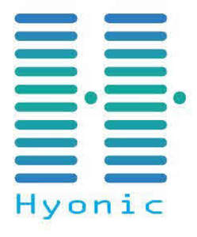

Trade Mark Journal No.2025/017 25 April 2025
UK00004188018 11 April 2025 (1,9,35,37,40)

- Class 1
- Battery electrolytes; Water for batteries; Batteries (Acidulated water for recharging -); Acidulated water for recharging batteries; Battery anti-sulphurizing agents; Battery fluid [acidulated water]; Batteries (Salts for galvanic -); Salts for galvanic batteries; Artificial graphite for secondary cell batteries; Powdered carbon for secondary cell batteries; Alkalines; Lithium; Anti-frothing solutions for batteries; Batteries (Anti-frothing solutions for -).
- Class 9
- Battery chargers; Smartphone battery chargers; Battery cables; Batteries; Battery packs; Battery terminals; Battery adapters; Solar battery chargers; Electric battery chargers; Battery charge devices; Wireless battery chargers; Solar-powered battery chargers; Battery charging equipment; Battery separators; Battery starters; Rechargeable batteries; Dry-cell batteries; Battery preheaters; Lithium batteries; Battery testers; Battery compensation chargers; Battery boxes; Nickel-cadmium batteries; Battery chargers for use with telephones; Cell phone battery chargers; Auxiliary battery packs; Anode batteries; Battery cases; Chargers for batteries; Battery jars; Battery booster cables; Battery leads; Mobile phone battery chargers; Galvanic batteries; Rechargeable electric batteries; Cell phone battery chargers for use in vehicles; Vehicle batteries; Battery charging devices for motor vehicles; Battery chargers for laptop computers; Ignition batteries ; Battery chargers for tablet computers; Ignition batteries; Electrical batteries; Car batteries; Battery chargers for mobile phones; Nickel-cadmium storage batteries; Battery chargers for electronic cigarettes; Solar-powered rechargeable batteries; Batteries, electric; Electric batteries; Solar batteries; Chargers for electric batteries; Terminals for batteries; Batteries for phones; Vaporizer batteries; Lithium secondary batteries; Power packs [batteries]; Battery testing apparatus; Battery jump starters; Lithium ion batteries; Electric storage batteries; Electrical storage batteries; Chargeable batteries; Accumulators [batteries]; Electrical cells and batteries; Dry batteries; Batteries for lighting; Lighting (Batteries for -); Batteries for vehicles; Portable power supplies (rechargeable batteries); Power units [batteries]; Electric-car charger; Uninterruptible power supply apparatus [battery]; Electric batteries for vehicles; Batteries, electric, for vehicles; Batteries for pocketlamps; Batteries for electric vehicles; Batteries for projectors; Grids for batteries; Batteries for mobile phones; Auxiliary batteries for mobile phones; Battery chargers for home video game machines; Car charger; Plates for batteries; Mobile telephone batteries; Electronic cigarette batteries; Solar batteries for domestic use; Electric batteries for powering electric vehicles; Charging appliances for rechargeable equipment; Solar batteries for industrial use; Acidimeters for batteries; Batteries for electronic cigarettes; Batteries for use with mobile telecommunication devices; Rechargeable cells; Electric charging cables; High tension batteries; Chargers for cell phone; Portable power chargers; Chargers for electrical accumulators; Rechargers for electric accumulators; Volt sticks [electrical protection devices]; USB chargers adapted for car cigarette lighter sockets; Batteries for electronic smokers' articles; Chargers for electric accumulators; Wireless charging pads for smartphones; Chargers; Chargers for smartphones; Mobile phone chargers; Wireless chargers; Power adapters for use in vehicle lighter sockets; Adapter cables (Electric -); Electric adapter cables.
- Class 35
- Retail services relating to batteries.
- Class 37
- Vehicle battery charging; Recharging of batteries; Rental of battery chargers; Mobile phone battery charging; Battery charging service for motor vehicles; Cell phone battery charging services; Recharging of batteries and accumulators; Replacement of batteries; Computer and telephone battery recharge services; Mobile telephone battery charging services; Charging of electric vehicles.
- Class 40
- Rental of batteries.
Hyonic Limited